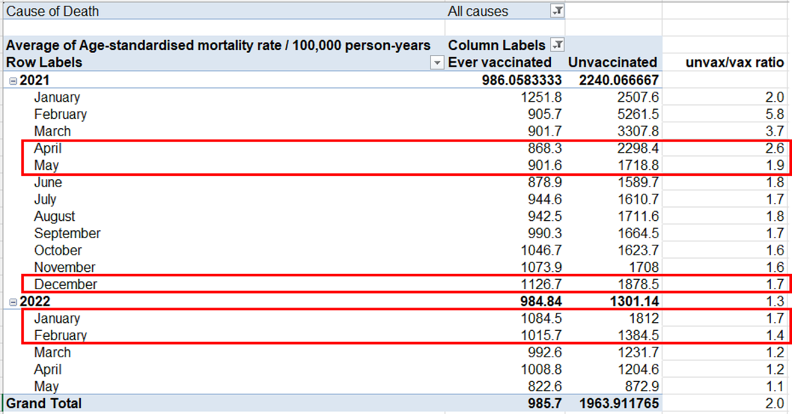
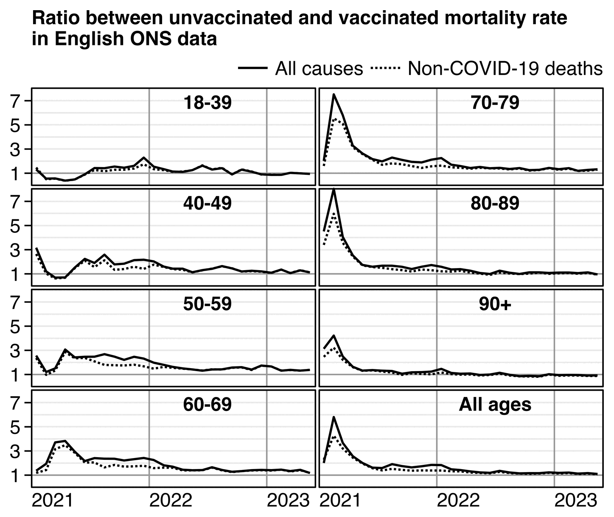
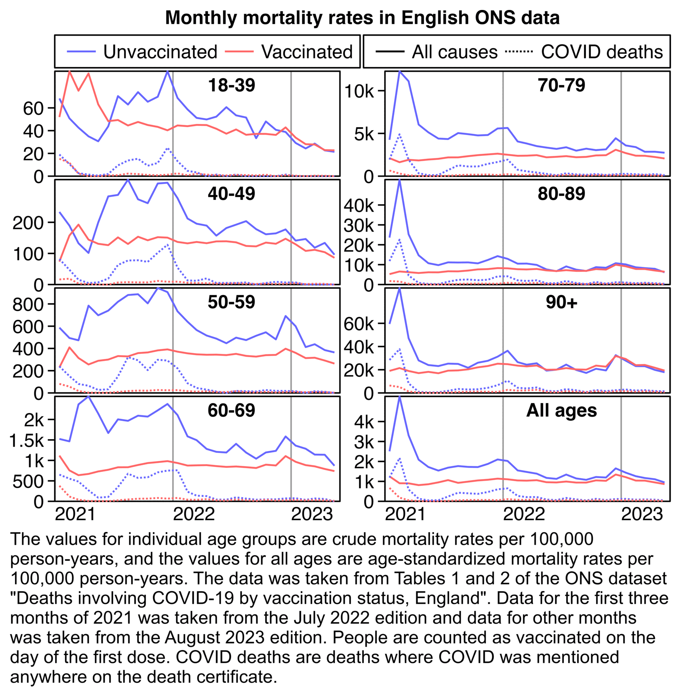

Other parts: rootclaim.html, rootclaim2.html, rootclaim3.html.
Kirsch posted this table of the English ONS data, where he pointed out that in April to May 2021 when there was a low number of COVID cases, the ratio between unvaccinated and vaccinated ASMR was higher than in December 2021 to February 2022 when there was a high number of COVID cases: [https://kirschsubstack.com/p/official-uk-ons-data-shows-the-covid]

However in April to May 2021 there were still many people who had been recently vaccinated, so vaccinated people were still heavily impacted by the temporal healthy vaccinee effect (which is a term coined by Jeffrey Morris for the stronger form of HVE which lasts for the first weeks or months after vaccination, as opposed to the inherent HVE that remains in place even long after vaccination).
From the plot below you can roughly see the magnitude of the HVE from the dashed line which shows non-COVID ASMR. The plot below also shows that the ratio between unvaccinated and vaccinated ASMR was in fact elevated during the Delta peak in August 2021 and the COVID wave that peaked in December 2021 to January 2022. But in October 2021 when there was a lower number of COVID deaths than in the surrounding months, the ratio between unvaccinated and vaccinated ASMR was also lower than in the surrounding months:

t=fread("http://sars2.net/f/ons.csv")
t=rbind(t[ed==7&month<="2021-03"],t[ed==9])[cause!="Deaths involving COVID-19"]
t[,x:=as.Date(paste0(month,"-15"))]
t[,vax:=factor(status!="Unvaccinated",,c("Unvaccinated","Vaccinated"))]
a=t[age!="Total",.(cmr=sum(dead)/sum(pop)),.(age,vax,x,cause)]
p=a[,.(y=cmr[1]/cmr[2]),.(age,x,cause)]
p=rbind(p,t[age=="Total"&status%like%"accin",.(y=asmr[1]/asmr[2],age="All ages"),.(x,cause)])
xstart=as.Date("2021-1-1");xend=as.Date("2023-6-1");xbreak=seq(xstart,xend,"year");yend=max(p$y)
ggplot(p)+
facet_wrap(~age,dir="v",ncol=2)+
geom_hline(yintercept=2:8,color="gray91",linewidth=.4)+
geom_hline(yintercept=1,color="gray60",linewidth=.4)+
geom_vline(xintercept=seq(xstart,xend,"year"),color="gray60",linewidth=.4)+
geom_rect(data=p[,max(y),age],aes(xmin=xstart,xmax=xend,ymin=0,ymax=yend),linewidth=.4,fill=NA,color="black",lineend="square")+
geom_line(aes(x,y,linetype=cause),linewidth=.6)+
geom_text(data=p[,max(y),age],aes(x=as.Date("2022-7-1"),y=yend,label=age),hjust=.5,fontface=2,vjust=1.5,size=3.8)+
labs(x=NULL,y=NULL,title="Ratio between unvaccinated and vaccinated mortality rate\nin English ONS data")+
scale_x_continuous(limits=c(xstart-.5,xend+.5),breaks=xbreak,labels=year(xbreak))+
scale_y_continuous(breaks=seq(1,7,2))+
scale_linetype_manual(values=c("solid","11"))+
scale_alpha_manual(values=c(1,0),guide="none")+
coord_cartesian(clip="off",expand=F)+
guides(color=guide_legend(order=1),linetype=guide_legend(order=2))+
theme(axis.text=element_text(hjust=0,size=11,color="black"),
axis.title=element_text(size=11,face=2),
axis.text.x=element_text(margin=margin(3)),
axis.ticks=element_line(linewidth=.4,color="black"),
axis.ticks.length.x=unit(0,"pt"),
axis.ticks.length.y=unit(4,"pt"),
legend.background=element_blank(),
legend.box.spacing=unit(0,"pt"),
legend.direction="horizontal",
legend.justification="right",
legend.key=element_blank(),
legend.key.height=unit(13,"pt"),
legend.key.width=unit(21,"pt"),
legend.margin=margin(,,5),
legend.position="top",
legend.spacing.x=unit(2,"pt"),
legend.spacing.y=unit(0,"pt"),
legend.text=element_text(size=11,vjust=.5),
legend.title=element_blank(),
panel.background=element_blank(),
panel.spacing=unit(2,"pt"),
plot.margin=margin(5,5,5,5),
plot.title=element_text(size=11,face=2,margin=margin(2,,4)),
strip.background=element_blank(),
strip.text=element_blank())
ggsave("1.png",width=4.8,height=4.1,dpi=300*4)
system(paste0("magick 1.png -trim -resize 25% -bordercolor white -border 24 -colors 256 1.png"))
The next plot shows that there was a period with elevated COVID deaths that lasted from around August 2021 until January 2022. But between January and February 2022 when there was a big drop in COVID deaths, there was also a clear drop in the ratio of all-cause ASMR between unvaccinated and vaccinated people:

library(data.table);library(ggplot2)
t=fread("http://sars2.net/f/ons.csv")
t=rbind(t[ed==7&month<="2021-03"],t[ed==9])
t[,x:=as.Date(paste0(month,"-15"))]
t[,vax:=factor(status!="Unvaccinated",,c("Unvaccinated","Vaccinated"))]
a=t[age!="Total",.(y=sum(dead)/sum(pop)*1e5),.(age,x,vax,cause)]
a=rbind(a,t[age=="Total"&status%like%"accin",.(x,y=asmr,age="All ages",vax,cause)])
p=a[cause!="Non-COVID-19 deaths"]
p[cause=="Deaths involving COVID-19",cause:="COVID deaths"]
xstart=as.Date("2021-1-1");xend=as.Date("2023-6-1");xbreak=seq(xstart,xend,"year")
ggplot(p)+
facet_wrap(~age,dir="v",scales="free_y",ncol=2)+
geom_vline(xintercept=seq(xstart,xend,"year"),color="gray60",linewidth=.4)+
geom_rect(data=p[,max(y),age],aes(xmin=xstart,xmax=xend,ymin=0,ymax=V1),linewidth=.4,fill=NA,color="black",lineend="square")+
geom_line(aes(x,y,linetype=cause,color=vax))+
geom_text(data=p[,max(y),age],aes(x=as.Date("2022-7-1"),y=V1,label=age),hjust=.5,fontface=2,vjust=1.5,size=3.8)+
labs(x=NULL,y=NULL,title="Monthly mortality rates in English ONS data")+
scale_x_continuous(limits=c(xstart-.5,xend+.5),breaks=xbreak,labels=year(xbreak))+
scale_y_continuous(breaks=\(x){y=pretty(x,4);y[y<.85*max(x)]},labels=\(x)ifelse(x<1000,x,paste0(x/1e3,"k")))+
scale_color_manual(values=c("#66f","#f66","black"))+
scale_linetype_manual(values=c("solid","11"))+
scale_alpha_manual(values=1:0)+
coord_cartesian(clip="off",expand=F)+
guides(color=guide_legend(order=1),linetype=guide_legend(order=2))+
theme(axis.text=element_text(hjust=0,size=11,color="black"),
axis.title=element_text(size=11,face=2),
axis.text.x=element_text(margin=margin(3)),
axis.ticks=element_line(linewidth=.4,color="black"),
axis.ticks.length.x=unit(0,"pt"),
axis.ticks.length.y=unit(4,"pt"),
legend.background=element_rect(color="black",linewidth=.4),
legend.box.margin=margin(,,2),
legend.box.spacing=unit(0,"pt"),
legend.direction="horizontal",
legend.justification="right",
legend.key=element_blank(),
legend.key.height=unit(13,"pt"),
legend.key.width=unit(21,"pt"),
legend.margin=margin(3,4,3,3),
legend.position="top",
legend.spacing.x=unit(2,"pt"),
legend.spacing.y=unit(0,"pt"),
legend.text=element_text(size=11,vjust=.5),
legend.title=element_blank(),
panel.background=element_blank(),
panel.spacing=unit(2,"pt"),
plot.margin=margin(5,5,5,5),
plot.title=element_text(hjust=.5,size=11,face=2,margin=margin(2,,4)),
strip.background=element_blank(),
strip.text=element_blank())
ggsave("1.png",width=5.47,height=4.3,dpi=300*4)
sub="The values for individual age groups are crude mortality rates per 100,000 person-years, and the values for all ages are age-standardized mortality rates per 100,000 person-years. The data was taken from Tables 1 and 2 of the ONS dataset \"Deaths involving COVID-19 by vaccination status, England\". Data for the first three months of 2021 was taken from the July 2022 edition and data for other months was taken from the August 2023 edition. People are counted as vaccinated on the day of the first dose. COVID deaths are deaths where COVID was mentioned anywhere on the death certificate."
system(paste0("mogrify -trim 1.png;magick 1.png \\( -size `identify -format %w 1.png`x -font Arial -interline-spacing -3 -pointsize $[43*4] caption:'",gsub("'","'\\\\'",sub),"' -splice x80 \\) -append -resize 25% -bordercolor white -border 24 -colors 256 1.png"))
Someone in Kirsch's Substack comments asked why February 2021 was an outlier in Kirsch's table, because in his table the ratio between unvaccinated and vaccinated ASMR was about 2.0 in January 2021, 5.8 in February, 3.7 in March, and 2.6 in April. I pointed out that in February a large part of vaccinated people had been vaccinated in recent weeks, and the ONS dataset has a very low number of deaths in the first 2 weeks after vaccination: [stat.html#Plot_deaths_by_weeks_after_vaccination_and_age_group]
I also pointed out that there was high COVID mortality in both January and February 2021. In January 2021 COVID ASMR accounted for about half of total ASMR in both unvaccinated and vaccinated people, but in February COVID ASMR now accounted for about 41% of total ASMR in unvaccinated people but only about 20% of total ASMR in vaccinated people, so vaccinated people had a much bigger drop in the percentage between January and February. I think it's because in Janury 2021 many vaccinated people had been vaccinated so recently that there had not yet been enough time for the immune response to build up after vaccination. But in February 2021 a larger part of vaccinated people had been vaccinated at least 2 or 3 weeks ago so the vaccines were now more effective. So the COVID deaths increased the ratio between unvaccinated and vaccinated ASMR more in February than January:
ons=fread("https://sars2.net/f/ons.csv")[ed==7&age=="Total"]
o=ons[status%like%"accin",asmr[cause=="Deaths involving COVID-19"]/asmr[cause=="All causes"]*100,.(month,status)]
o[status=="Ever vaccinated",status:="Vaccinated"]
o[,.(unvaccinated=V1[1],vaccinated=V1[2]),month][,ratio:=unvaccinated/vaccinated]|>mutate_if(is.double,round,1)|>print(r=F)
# month unvaccinated vaccinated ratio
# 2021-01 47.3 53.7 0.9
# 2021-02 41.3 20.3 2.0
# 2021-03 17.9 6.0 3.0
# 2021-04 6.3 1.8 3.5
# 2021-05 2.6 0.7 3.8
# 2021-06 3.5 0.8 4.6
# 2021-07 13.5 2.6 5.3
# 2021-08 23.6 5.0 4.7
# 2021-09 22.1 6.6 3.3
# 2021-10 19.8 6.4 3.1
# 2021-11 24.7 6.5 3.8
# 2021-12 27.7 5.0 5.5
# 2022-01 32.3 10.1 3.2
# 2022-02 18.7 7.4 2.5
# 2022-03 14.9 7.5 2.0
# 2022-04 17.0 9.6 1.8
# 2022-05 8.9 4.3 2.1
Another reason why the ratio between unvaccinated and vaccinated ASMR was higher in February than January is probably because vulnerable groups of people were priorized for early vaccination.
In the next plot of Dutch CBS data if you look at the left panel which shows people who are not in long-term care, the black line shows that the ratio between unvaccinated and vaccinated ASMR was clearly elevated during the COVID wave in the winter of 2021-2022. But the black line was still higher in May 2021 than in the winter of 2021-2022, because the HVE was stronger in May 2021. You can estimate the magnitude of the HVE based on the gray line which shows the ratio of non-COVID ASMR: [rootclaim3.html#Comparison_to_Dutch_CBS_data]